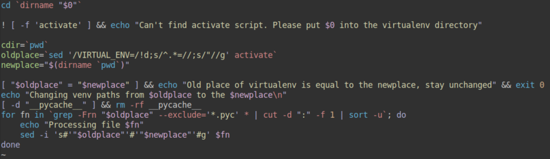

Последовательное разворачивание словарей и списков в Python
Бывают такие вещи, до которых постоянно не доходят руки и это одна из них. Если у нас есть объект большой вложенности, то мы не можем в python, как скажем, в java извлечь нужное значение, указав объект и последовательность его ключей. Нам приходится двигаться последовательно вглубь объекта, проверяя наличие нужного нам ключа на каждом уровне вложенности, а то и тип самого объекта. Решения существуют, но в виде отдельных библиотек - pydash, dictor и, вероятно, каких-то иных, которые необходимо ставить отдельно. Не люблю лишние зависимости, если вместо них можно обойтись десятком строк.
Теги: python
Скрипт для быстрого перемещения python virtualenv

Уже в который раз сталкиваюсь с тем, что при перемещении какого-либо проекта из одной директории в другую при использовании virtualenv возникает проблема, связанная с тем, что при создании virtualenv в скрипты окружения прописываются абсолютные пути до интерпретаторов и всего прочего. Конечно, можно в старом окружении выгрузить список исопльзуемых библиотек через pip3 freeze > requirements.txt и потом в новом поставить библиотеки из списка через pip3 install -r requirements.txt, но такой подход занимает время, особенно если его использовать на одноплатных компьютерах, не отличающихся ни наличием быстрого flash накопителя, ни быстрого процессора, ни быстрого интернета. Особенно это актуально, когда в проекте несколько десятков тяжёлых библиотек и env весит под несколько сотен мегабайт. Сегодня мне это понадобилось для переноса директории с Home Assistant на OrangePi Zero. Решил, что "хватит это терпеть" и написал простой скриптик, который из activate получает старое значение VIRTUAL_ENV, из текущего положения - новое и заменяет его во всех файлах, где это необходимо. Всё оказалось достаточно просто. Проверил - работает. Скрипт необходимо положить в директорию, где расположен activate (не забываем выставить исполняемый бит через chmod +x scriptname). Ниже его содержимое.
Как уменьшить размер контейнера с python проектом

Для многих небольших микросервисов и проектов я использую python. В то же время контейнеры с python внутри не отличаются компактностью. Сегодня на примере одного проекта попробую проиллюстрировать, как избавить контейнер от лишнего веса.
Теги: админское, containers, docker, python
Про оптимизацию, тишину, эволюцию, нестандартные решения и домашнюю сеть.

Достаточно давно я собрал свой первый домашний сервер. И довольно много сил я тогда положил на то, чтобы сделать его как можно более тихим, маленьким и потребляющим минимум энергии. Я сменил радиаторы на процессеоре и северном мосту с целью увеличить площадь рассеивающей поверхности. Я искал самые тихие кулеры, я занижал частоту процессора, я сменил кулер в блоке питания и жёсткий диск я выбирал тоже исходя из теж же требований - тихий и потребляющий минимум энергии. В конце-концов, я переместил свой сервер в диван. Мне тогда нужна была платформа для экспериментов и само-собою подразумевалось, что она будет работать 24 часа, 7 дней в неделю.
Зачем ненормальному человеку может быть нужен сервер? Во-первых, это файлопомойка; во-вторых, это медиакомбайн, соединённый с музыкальным центром и имеющий доступ ко всем твоим аудиозаписям, а заодно и к нескольким десяткам онлайн радиостанций; в-третьих файрвол, позволяющий тонко управлять различными подключениями и роутингом между двумя провайдерами и рабочей сетью; в-четвёртых - VPN; в пятых... Продолжать можно долго.
Теги: админское, automatization, networking, python
Вызов метода класса по имени в python

Недавно столкнулся с одной простой задачей, с которой раньше cталкиваться не приходилось, поэтому оставлю себе здесь запись в качестве памятки. В MicroPython необходимо было для одного класса написать встроенный менеджер задач - некий аналог cron и таймера, который бы позволил микроконтроллеру в общем цикле вызывать методы этого же класса (например, проверка состояния GPIO, датчиков, подключения к WiFi, MQTT и т.п.) по расписанию или через заданное количество времени после наступления какого-либо события. В числе прочего планировалась возможность фильтровать задачи по имени для динамической расстановки их приоритетов и я счёл, что лучшим вариантом в этом случае будет хранение в структуре данных имени метода, затем, возможно, создание словаря, ключами которого будут имена методов. Заодно и имя метода в виде строки куда проще передавать в другой метод в качестве параметра плюс аттрибуты отдельным кортежем во втором параметре. Использовать для обратного преобразования (да и для практически любых других задач) eval - мягко говоря, дурной тон, поэтому пришлось мучать гугл. Решение оказалось не простым, а очень простым. Я уже устал удивляться подобному при программировании на python, но всё ещё продолжаю это делать.
Теги: python